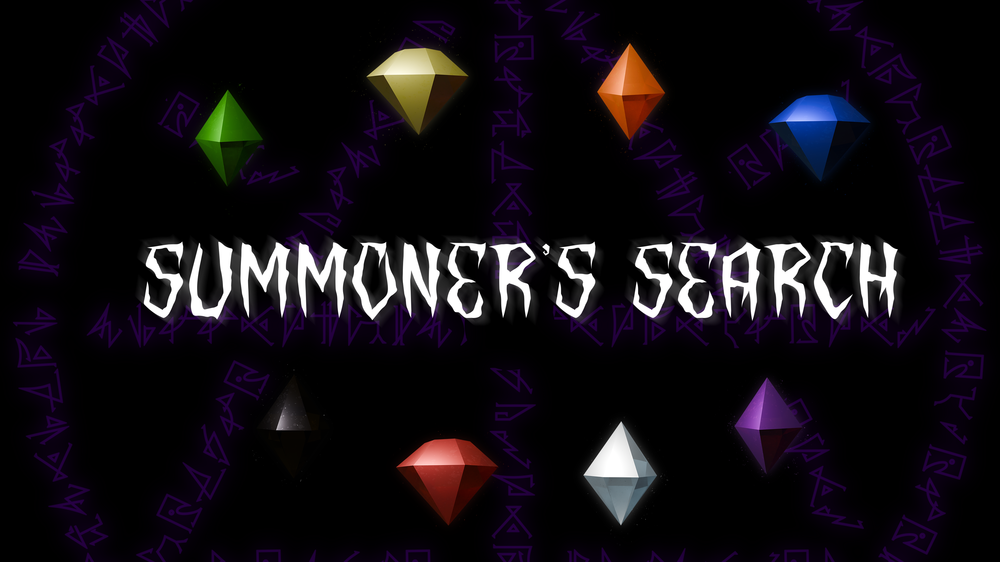

Can you solve the mystery of the gems to awaken the ancient demon? Perform the ritual at your own risk.
A first-person, horror-puzzle game developed in Unity 3D for SCREAM JAM 2025.
Loose books and papers will offer you hints on where to find each gem and how to place them in the box. When you are confident with your placement, interact with the book in the center of the summoning circle to summon the demon.
Programmers - Parker Fairchild, Cristiano D'Angelo, Ryan Andrews
Art / Design - Jordan Fisher


A platformer microgame made for the 12 Seconds of Christmas Game Jam 2024. Can you help Santa escpae the chimney in only 12 seconds?
This project was used as an exercise for the team to learn to use the Godot engine.
Programmers - Parker Fairchild, Cristiano D'Angelo, Ryan Andrews
Art - Jordan Fisher

A real-time ray tracer constructed using a mix of Javascript and GLSL. Implements orthographic ray casting, soft shadows, spot lights, and mirror material reflections.
Assignment for the Computer Graphics (CS 476) course at Ursinus College.
*For best results, please use FireFox to play the demo.

Parker Fairchild, Cristiano D'Angelo, Dalton Rothenberger
Final Project for the Computer Graphics (CS 476) course at Urinus College. A simple game in which the player controlls a ship and defends buildings from a monster attack.
*For best results, please use FireFox to play the demo.